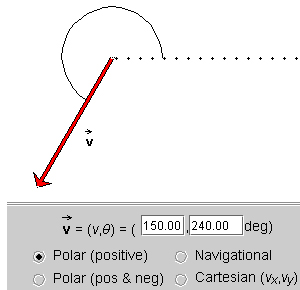
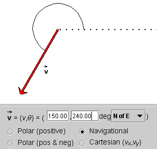
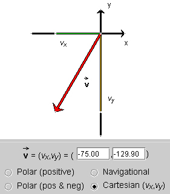
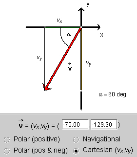

Prerequisites
Students need to have a basic knowledge of angles, and for the last part of the lesson need to be able to use the Pythagorean theorem and basic trigonometry.
Learning Outcomes
Students will develop an understanding of different ways of specifying vectors in two dimensions: by magnitude and direction (in three different ways) or by components.
Instructions
Students should know how the applet functions, as described in Help and ShowMe.
The applet should be open. The step-by-step instructions in the following text are to be done in the applet. You may need to toggle back and forth between instructions and applet if your screen space is limited.
 The Magnitude and Direction of a Vector
The Magnitude and Direction of a Vector
 Polar (positive)
Polar (positive)
 Polar (positive and negative)
Polar (positive and negative)
 Navigational
Navigational
To specify a vector in two dimensions, one needs to specify two numbers (scalars). There are many possibilities for doing this. Let's start by using a vector's magnitude and direction and compare different ways of doing that.
There is only one way to specify the magnitude or absolute value of a vector. However, there are a variety of ways to specify direction. Direction is often specified in terms of an angle, but there are different ways of choosing an angle for a given vector. Here we will consider three possibilities.


Figure 1
In this mode, an angle is measured from a reference line, shown dotted and pointing east, in the positive (counter-clockwise) sense that is indicated by the arc. Angles can range from 0 to 360o. 360o is equivalent to 0o.
Question. What would be the angle for the vector in Figure 1 according to the "Polar (pos & neg)" method? Draw the angle with an arc in your Notebook.
Answer. The answer is -120o. See the diagram in Figure 2 below.

Figure 2
Verify this by selecting the "Polar (pos & neg)" mode in your applet.
Exercise. Use the applet to set vectors that point into the first, second, third, and fourth quadrants. For each vector, select the Polar (positive) mode first. Predict what the angle should be in the Polar (pos & neg) mode, and then check your answer by selecting that mode.

Figure 3
"North of East" means that the angle is measured starting from the east direction and going towards the north direction, but not necessarily stopping there. In the present example, the angle goes all the way past the west direction.
Question. What do you expect the angle will be for the same vector if you choose "SofE" (South of East)? Make a prediction and then check it. You should get the display in Figure 4 below.

Figure 4
Note that the angle is +120o, not -120o. In the Navigational mode, angles are by definition positive and range from 0 to 360o.
Exercise. Predict the values for the angle for each of the remaining six navigational settings for the present vector. Then use the applet to check your predictions.
If you have changed the vector, reset it to that shown in any of Figures 1 to 4. Then click the radio button labeled "Cartesian (vx,vy)". You should see the display in Figure 5 below.

Figure 5
The projections of the vector onto the x and y axes, shown in green and yellow, respectively, are called the scalar components of the vector. They are called scalar components because they are numbers. The scalar components are equal to the x and y coordinates of the tip of the vector if the tail end of the vector is at the origin of the coordinate system, as it is here.
The x and y scalar components of a vector  are denoted vx and
vy, respectively. In the present case, this pair of
components has the value
are denoted vx and
vy, respectively. In the present case, this pair of
components has the value
(vx,vy) =
(-75,-129.90)  (1)
(1)
You can use the notation
(vx,vy) to denote the vector , because the vector is fully specified in
terms of its two scalar components. Thus, when you are required to
calculate a vector you can give your
final answer in the form of Equation (1) above. This is quite
alright. There is no need to calculate the magnitude and direction of
the vector. The magnitude and direction contain no more information
than the components.
Or you could state your final answer in the form
= (-75,-129.90) .  (2)
(2)
However, when describing a vector by its two components, it must be understood from the context how the x and y axes are defined. Otherwise, you must explicitly state how they are defined.
Question. Given the magnitude and direction of a vector, how can one calculate the vector's (vx,vy) components, for a given pair of x and y axes?
Let's answer this by doing the calculation for the present vector. The first thing to do is to make a diagram showing the relevant quantities. Such a diagram is shown in Figure 6 below.

Figure 6
The diagram shows a right-angle triangle containing the vector as its hypotenuse, with the other two
sides equal to vx and vy, or
rather, equal to their magnitudes |vx| and
|vy| (since vx and
vy are both negative in the present case). The
angle a defines the orientation of . We need to know this angle.
Let's assume is given according to
mode "Polar (positive)", as in Figure 1. Then the angle extending
from the positive x-axis to in
the positive sense is equal to 240o. This implies a = 60o. The magnitude v of
the vector is 150.
Basic trigonometry gives |vy|/v = sin a whence
|vy| = v sin a = 150 x sin 60o = 129.90 .  (3)
(3)
Figure 6 shows that vy is negative. Therefore,
vy = -129.90 .  (4)
(4)
Similarly, from |vx|/v = cos a it follows that
|vx| = v cos a = 150 x cos 60o = 75.00 .  (5)
(5)
Figure 6 shows that vx is negative. Therefore,
vx = -75.00 .  (6)
(6)
Question. Given the values of the scalar components of as in Equations (4) and (6), how can one
calculate the magnitude and direction of ?
Answer. Applying the Pythagorean theorem to the right-angle triangle in Figure 6, we get
v2 =
vx2 + vy2 =
(-75)2 + (-129.9)2 = 22,499  (7)
(7)
v = 150.00 .  (8)
(8)
Applying the definition of the tangent to the right-angle triangle in Figure 6 gives
tan a =
|vy|/|vx| = 129.9/75 = 1.732  (9)
(9)
a = 60o  (10)
(10)
q = 60o S of W
= 240o N of E.  (11)
(11)